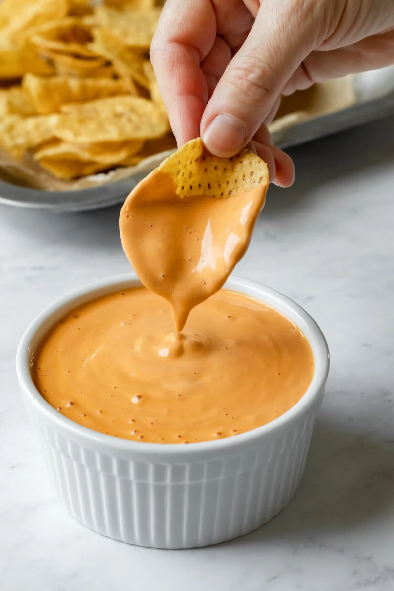

Raw Vegan Cheeze Sauce
Diet: Raw, Dairy-Free, Vegan
Prep Time: 5 min
Servings: 12
Description
This vegan cheese sauce comes together in just 5 minutes without any cooking involved! This is the best dairy-free cheese sauce to use on anything and everything including veggies, baked potatoes, nachos, pasta, and more! Oil-free, gluten-free, and made without coconut or soy.

Ingredients
- 1 cup raw cashews, soaked for 2-24 hours and drained
- Juice of 1 lemon
- 4 tablespoons nutritional yeast
- 1 tablespoon olive oil
- 1 tbsp sunflower seeds
- 1/2 teaspoon Herbamare* or salt of choice
- 1 tablespoon wheat-free tamari (coconut aminos)
- 3 tablespoons oat milk or water
Steps
- Blend all ingredients together in a high-speed blender until smooth. Add enough water to the mixture to keep blender moving.
- Mixture should be thick and slightly pourable. Scoop out with a spatula and spread a thick layer gently onto nut crust.
- Use immediately or refrigerate for later use. Cheese will thicken after chilled for 3 or more hours.
Recipe Author
Lori Rasmussen of My Quiet Kitchen